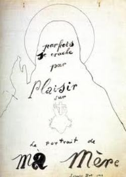

Centre Pompidou
Place Georges Pompidou, 4e


“a museum full of dreams.”
Although pieces are rotated out occasionally, this museum of modern art has showcased several
Surrealist works of art, including Max Ernst’s Ubu Imperator (1923) and Chimeras (1929),
Salvador Dalí’s Sometimes I Spit with Pleasure on the Portrait of my Mother (1929, above) and
William Tell (1930), Girgio de Chirico’s Premonitory Portrait of Guillaume Apollinaire (1919),
and several works by Paul Klee.
Surrealist writer René Crevel, author of the first French monograph on Salvador Dalí,
noted that De Chirico’s paintings were evocative of “the streets of some noumenal city,”
and that a Paul Klee piece was “a museum full of dreams.”

Hôtel de Ville